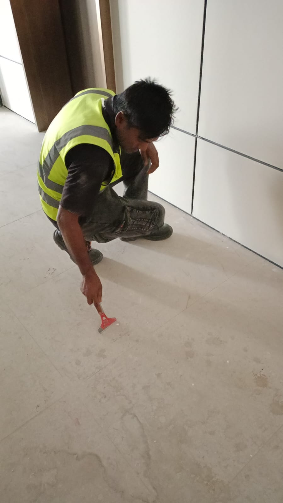
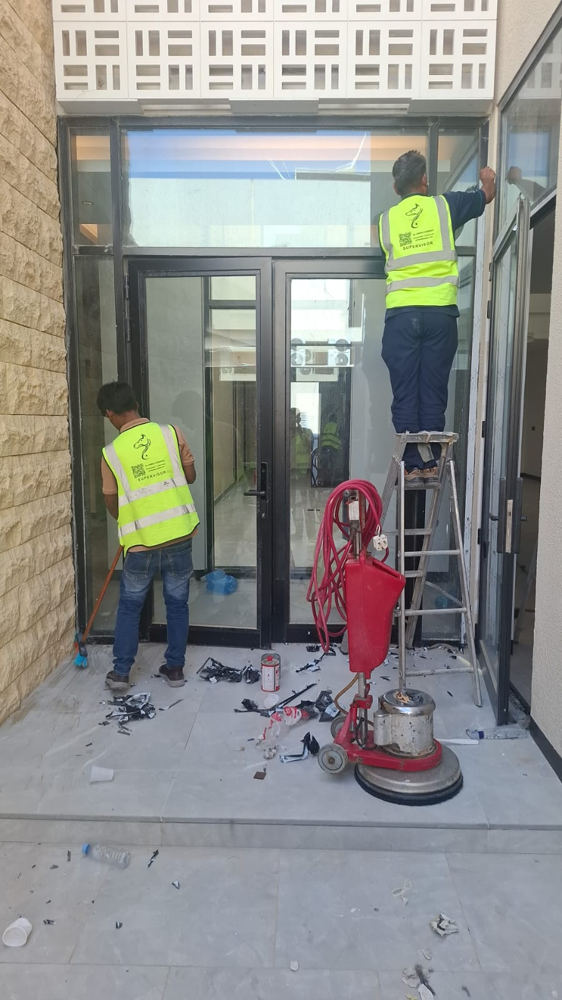

يشهد قطاع العقارات في الرياض خلال عام 2026 نشاطاً كبيراً في تسليم المنازل الجديدة بعد الانتهاء من أعمال التشطيب مباشرة، وهو ما يجعل الحاجة إلى شركة منازل بعد التشطيب بالرياض متخصصة أمراً ضرورياً لكل عائلة تستعد لاستلام منزلها الجديد والانتقال إليه بأسرع وقت ممكن دون تأخير بسبب بقايا أعمال التشطيب المتراكمة.
وتختلف طبيعة تنظيف المنازل الجديدة بعد التشطيب عن التنظيف الدوري المعتاد، إذ تحتوي الأرضيات والجدران والزجاج على بقايا الدهانات والسيليكون وغبار مواد البناء المختلفة التي تحتاج إلى أدوات ومحاليل متخصصة لإزالتها دون التأثير على الرخام أو السيراميك أو الزجاج، وهو ما يتطلب التعامل مع شركة تنظيف منازل بالرياض تمتلك الخبرة الكافية لهذا النوع الدقيق من التنظيف.
ومن هذا المنطلق، تقدم شركة حلول وتميز للتنظيف عروض تنظيف خاصة لعام 2026 لتنظيف المنازل الجديدة بعد التشطيب مباشرة، بالاعتماد على فريق مدرب على التعامل مع مخلفات التشطيب المختلفة، ومعدات حديثة تضمن تسليم المنزل نظيفاً بالكامل وجاهزاً للسكن الفوري دون أي تأخير.
وقد نفذت شركة حلول وتميز للتنظيف عدداً كبيراً من المشاريع الفعلية لتنظيف المنازل الجديدة بعد التشطيب في مختلف أحياء الرياض، حيث حرص الفريق في كل مشروع على إزالة جميع آثار التشطيب من الأرضيات والجدران والزجاج، بما يعكس الصورة النهائية التي تستحقها العائلة في منزلها الجديد.
لماذا يحتاج المنزل الجديد إلى تنظيف متخصص بعد التشطيب؟
تتراكم في المنزل الجديد بعد انتهاء أعمال التشطيب كميات كبيرة من الغبار وبقايا الدهانات وقطرات السيليكون الزائد المستخدم في تركيب الأبواب والنوافذ، وهي مواد يصعب إزالتها بأدوات التنظيف المنزلية العادية دون التأثير على سطح الرخام أو السيراميك، ولهذا فإن التعامل مع شركة منازل بعد التشطيب بالرياض متخصصة يُعد خطوة ضرورية قبل الانتقال إلى المنزل الجديد.
كما أن بعض الأماكن في المنزل الجديد مثل زوايا الجدران وخلف المطابخ الجاهزة والحمامات تحتاج إلى عناية خاصة أثناء التنظيف بعد التشطيب، وهو ما يميز فريق شركة تنظيف منازل بالرياض المدرب على الوصول إلى هذه الأماكن الدقيقة وتنظيفها بشكل كامل دون ترك أي أثر من مخلفات أعمال البناء والتشطيب.
ولهذا تحرص شركة حلول وتميز للتنظيف على تجهيز فرق عمل متخصصة لهذا النوع من المشاريع، بحيث يتم تنفيذ العمل بشكل منظم يغطي جميع غرف المنزل من الأرضيات وحتى الأسقف، مع الالتزام بجدول زمني دقيق يتناسب مع موعد انتقال العائلة إلى منزلها الجديد.
- إزالة بقايا الدهانات والسيليكون من الأرضيات والجدران
- تنظيف الزجاج والنوافذ من آثار الغبار ومخلفات التركيب
- تلميع الرخام والسيراميك لإعادة لمعانه الأصلي
- تنظيف المطابخ والحمامات من بقايا مواد التشطيب
- إزالة مخلفات البناء المتراكمة في الأفنية والممرات الخارجية

إزالة بقايا الدهانات والسيليكون من أرضية رخامية لمنزل جديد بعد التشطيب
خصائص تنظيف المنازل الجديدة بعد التشطيب
يتميز تنظيف المنازل الجديدة بعد التشطيب بطبيعة خاصة تختلف حسب نوع كل مساحة داخل المنزل، ولكل جزء متطلبات خاصة تراعيها شركة منازل بعد التشطيب بالرياض عند وضع خطة التنظيف المناسبة لكل منزل على حدة قبل موعد التسليم النهائي للعائلة.
الأرضيات الرخامية والسيراميك
تحتاج الأرضيات الرخامية والسيراميك في المنازل الجديدة إلى إزالة دقيقة لبقايا الأسمنت والدهانات الجافة الملتصقة بالسطح، وهي عملية تتطلب أدوات خاصة لا تخدش الرخام أو تفقده لمعانه الأصلي، وهو ما يميز شركة تنظيف منازل بالرياض ذات الخبرة الفعلية في هذا النوع من التنظيف الدقيق.
الزجاج والنوافذ
تتراكم على زجاج النوافذ والأبواب في المنازل الجديدة بقايا السيليكون وبصمات الأصابع من أعمال التركيب، وهي آثار تحتاج إلى محاليل متخصصة لإزالتها دون ترك أي خدوش، حيث تركز شركة حلول وتميز للتنظيف على استخدام أدوات مناسبة لكل نوع من أنواع الزجاج المستخدم في المنزل الجديد.
المطابخ والحمامات
تحتوي المطابخ والحمامات الجديدة على تفاصيل دقيقة مثل زوايا الخزائن وحواف الأحواض التي تحتاج إلى عناية خاصة أثناء التنظيف بعد التشطيب، ولهذا يراعي فريق شركة منازل بعد التشطيب بالرياض هذا الجانب بدقة، بحيث يتم تسليم المطبخ والحمام بمظهر نظيف تماماً جاهز للاستخدام الفوري دون أي تأخير.
خطوات تنفيذ خدمة تنظيف المنازل بعد التشطيب
تعتمد شركة حلول وتميز للتنظيف على منهجية عمل واضحة عند تنفيذ مشاريع تنظيف المنازل الجديدة بعد التشطيب، بحيث يمر كل مشروع بعدة مراحل متتالية تضمن تسليم منزل نظيف بالكامل دون أي أضرار جانبية على الأرضيات أو الزجاج. وتشمل خطوات شركة تنظيف منازل بالرياض ما يلي:
- معاينة المنزل وتحديد نوع الأرضيات والأسطح المطلوب تنظيفها
- تجهيز فريق العمل والمعدات المناسبة لمساحة المنزل
- إزالة بقايا الدهانات والسيليكون من الأرضيات والجدران
- تنظيف الزجاج والنوافذ من آثار الغبار ومخلفات التركيب
- تلميع الرخام والسيراميك لإعادة لمعانه الأصلي بالكامل
- تنظيف المطابخ والحمامات من بقايا مواد التشطيب المختلفة
- تنظيف الأفنية والممرات الخارجية من مخلفات البناء المتبقية
- تسليم المنزل نظيفاً بالكامل جاهزاً للسكن الفوري مباشرة
وتحرص شركة منازل بعد التشطيب بالرياض التابعة لحلول وتميز على تنفيذ جميع هذه المراحل بدقة عالية، مع وجود مشرف ميداني مسؤول عن متابعة سير العمل للتأكد من تنظيف جميع غرف المنزل دون استثناء قبل موعد التسليم النهائي للعائلة.

تنظيف وتلميع المدخل الزجاجي لمنزل جديد قبل تسليمه للعائلة
لماذا تعد حلول وتميز الخيار الأمثل لتنظيف المنازل الجديدة؟
تمتلك شركة حلول وتميز للتنظيف خبرة فعلية في التعامل مع المنازل الجديدة بعد التشطيب مباشرة، بدءاً من إزالة مخلفات البناء وحتى التلميع النهائي لكل ركن في المنزل، وهو ما يجعلها من أبرز الخيارات لدى من يبحث عن شركة منازل بعد التشطيب بالرياض ذات سجل واضح من المشاريع المنفذة سابقاً بنجاح.
تحرص شركة حلول وتميز للتنظيف على توفير كافة المستندات الرسمية المطلوبة قبل بدء أي مشروع، بما في ذلك السجل التجاري رقم 7050798722 والتسجيل الضريبي رقم 310042572600003، بما يضمن التعامل بثقة وشفافية كاملة مع كل عميل يطلب الخدمة.
كما تعتمد شركة تنظيف منازل بالرياض التابعة لحلول وتميز على معدات حديثة ومحاليل آمنة على جميع أنواع الأسطح، إلى جانب فريق عمل مدرب على التعامل مع المنازل الجديدة بسرعة ودقة تتناسب مع مواعيد الانتقال المحددة لكل عائلة على حدة.
ويعمل فريق حلول وتميز للتنظيف على مدار العام لتغطية احتياجات العملاء في مختلف أحياء الرياض، مع تقديم عروض خاصة لعام 2026 على خدمة تنظيف المنازل الجديدة بعد التشطيب، بما يتيح للعائلات توفير جزء من تكلفة الانتقال إلى المنزل الجديد.
وتحرص شركة حلول وتميز للتنظيف كذلك على تقديم أسعار تنافسية وشفافة لجميع عملائها، مع إمكانية تقديم عرض سعر مفصل بعد المعاينة المجانية مباشرة، دون أي رسوم خفية أو التزامات مسبقة على العميل قبل بدء التنفيذ الفعلي.
مناطق التغطية داخل مدينة الرياض
تغطي شركة منازل بعد التشطيب بالرياض التابعة لحلول وتميز جميع أحياء ومناطق العاصمة الرياض دون استثناء، بحيث يمكن لأي عائلة في أي موقع داخل المدينة طلب الخدمة والحصول على فريق عمل متكامل خلال وقت قصير من تاريخ التواصل الأول.
وسواء كان المنزل فيلا مستقلة في حي هادئ أو وحدة سكنية ضمن مجمع كبير، فإن شركة تنظيف منازل بالرياض التابعة لحلول وتميز قادرة على الوصول إليه وتنفيذ المشروع بنفس مستوى الجودة والاحترافية في جميع المواقع داخل المدينة.
معايير اختيار شركة موثوقة لتنظيف المنازل الجديدة
قبل التعاقد مع أي جهة، ينبغي على أصحاب المنازل الجديدة التأكد من عدة معايير أساسية تضمن اختيار شركة منازل بعد التشطيب بالرياض تستحق الثقة فعلاً، وليس مجرد جهة تدعي الخبرة دون أي سجل حقيقي من المشاريع المنفذة سابقاً في هذا المجال تحديداً.
ومن أبرز هذه المعايير التأكد من امتلاك الشركة لمعدات حديثة، ومحاليل آمنة على الرخام والزجاج، إلى جانب فريق مدرب فعلياً على التعامل مع مخلفات التشطيب دون أي أضرار جانبية. وتلتزم شركة تنظيف منازل بالرياض التابعة لحلول وتميز بجميع هذه المعايير دون استثناء في كل مشروع تنفذه.
كما يُنصح بطلب معاينة ميدانية مجانية قبل التعاقد، حيث تتيح شركة حلول وتميز للتنظيف لعملائها إمكانية طلب معاينة دقيقة للمنزل قبل تقديم عرض السعر النهائي، بما يضمن دقة العرض المقدم ومطابقته لحجم العمل الفعلي المطلوب دون أي مفاجآت لاحقة بعد بدء التنفيذ.
ومن المهم أيضاً التأكد من وجود ضمان على جودة التنفيذ، بحيث تلتزم الشركة بإعادة أي جزء لم يصل إلى المستوى المطلوب دون أي تكلفة إضافية على العميل، وهو ما تحرص عليه شركة حلول وتميز للتنظيف في جميع مشاريعها بغض النظر عن حجم المنزل أو موقعه.
نصائح للعائلات قبل الانتقال إلى المنزل الجديد
توصي شركة منازل بعد التشطيب بالرياض التابعة لحلول وتميز العائلات بعدة نصائح عملية قبل موعد الانتقال، أهمها التنسيق المبكر مع فريق التنظيف بعد انتهاء أعمال التشطيب مباشرة، بما يضمن جاهزية المنزل بالكامل في الموعد المحدد للانتقال دون أي تأخير غير متوقع.
كما يُفضل إجراء جولة معاينة نهائية بعد التنظيف مباشرة وقبل نقل الأثاث، حيث تتيح شركة تنظيف منازل بالرياض للعميل فرصة مراجعة النتيجة النهائية والتأكد من مطابقتها للمستوى المطلوب في جميع غرف المنزل قبل بدء عملية نقل الأثاث والانتقال الفعلي.
ومن النصائح المهمة أيضاً تجنب إجراء أي تعديلات إضافية على التشطيب بعد التنظيف مباشرة، حيث قد يؤدي ذلك إلى تراكم غبار جديد يستدعي إعادة جزء من عملية التنظيف، ولهذا تنصح شركة تنظيف منازل بالرياض بجدولة أي أعمال إضافية قبل موعد التنظيف النهائي وليس بعده.
الفرق بين تنظيف ما بعد التشطيب والتنظيف الدوري
يختلف تنظيف المنزل بعد التشطيب بشكل جوهري عن التنظيف الدوري المعتاد، حيث يتطلب إزالة مواد صعبة مثل بقايا الدهانات والسيليكون الجاف وغبار البناء المتراكم، وهو ما يجعل التعامل مع شركة منازل بعد التشطيب بالرياض متخصصة في هذا النوع تحديداً أمراً ضرورياً لتجنب أي أضرار قد تنتج عن استخدام أدوات غير مناسبة.
كذلك يحتاج تنظيف ما بعد التشطيب إلى محاليل كيميائية مختلفة قادرة على إذابة بقايا مواد البناء دون التأثير على الرخام أو الزجاج، وهو ما تتميز به شركة تنظيف منازل بالرياض في التعامل مع هذا النوع الدقيق من التنظيف الذي لا يظهر عادة في التنظيف المنزلي المعتاد بعد فترة من السكن.
وأخيراً، يتطلب تنظيف المنزل الجديد وقتاً أطول وتركيزاً أكبر على التفاصيل الدقيقة مقارنة بالتنظيف الدوري، وهو ما يميز فريق شركة حلول وتميز للتنظيف الذي يحرص على تخصيص وقت كافٍ لكل غرفة في المنزل لضمان نتيجة نهائية نظيفة تماماً قبل الانتقال الفعلي للعائلة.
أنواع المنازل الأكثر طلباً للخدمة في الرياض
يشهد سوق العقارات في الرياض خلال عام 2026 طلباً متزايداً على خدمات تنظيف ما بعد التشطيب، وتتنوع هذه الطلبات بين الفلل المستقلة والشقق ضمن المجمعات السكنية والوحدات التجارية الصغيرة، وتراعي شركة منازل بعد التشطيب بالرياض هذا التنوع عند وضع خطة العمل المناسبة لكل نوع.
الفلل المستقلة
تحتاج الفلل المستقلة إلى وقت أطول في التنظيف نظراً لاتساع مساحتها وتعدد طوابقها، ولهذا يخصص فريق شركة تنظيف منازل بالرياض عدداً أكبر من العمال لهذا النوع من المشاريع لضمان الانتهاء في الوقت المناسب قبل موعد انتقال العائلة إلى منزلها الجديد.
الشقق ضمن المجمعات السكنية
تحتاج الشقق ضمن المجمعات السكنية إلى معاملة مختلفة عن الفلل المستقلة، حيث يركز فريق شركة حلول وتميز للتنظيف على التنسيق مع إدارة المجمع بخصوص مواعيد الدخول والخروج، بما يضمن عدم إزعاج السكان الآخرين أثناء تنفيذ عملية التنظيف داخل الوحدة السكنية الجديدة.
وبغض النظر عن نوع المنزل أو مساحته، تلتزم شركة منازل بعد التشطيب بالرياض التابعة لحلول وتميز بتقديم نفس مستوى الجودة والدقة في كل مشروع، مع تكييف حجم الفريق ومدة التنفيذ بما يتناسب مع طبيعة كل منزل على حدة.
عروض تنظيف المنازل لعام 2026
تقدم شركة حلول وتميز للتنظيف عروضاً خاصة لعام 2026 على خدمة تنظيف المنازل الجديدة بعد التشطيب، تشمل خصومات على الباقات الشاملة التي تغطي جميع غرف المنزل من الأرضيات وحتى الزجاج والمطابخ والحمامات في زيارة واحدة متكاملة.
وتسعى شركة تنظيف منازل بالرياض دائماً إلى تقديم أسعار عادلة تتناسب مع حجم المنزل ومساحته الفعلية، مع تجنب أي رسوم إضافية غير متوقعة بعد بدء التنفيذ، بما يمنح العميل شفافية كاملة في التعامل من البداية وحتى تسليم المنزل نظيفاً بالكامل.
كما تتيح شركة منازل بعد التشطيب بالرياض التابعة لحلول وتميز خصومات خاصة لعملاء 2026 عند الحجز المبكر قبل موعد التسليم بفترة كافية، بما يشجع العائلات على التخطيط المسبق لعملية الانتقال دون التعرض لضغط الوقت في اللحظات الأخيرة.
أهمية الالتزام بالمواعيد في تنظيف المنازل الجديدة
يعتبر الالتزام بالمواعيد من أهم العوامل التي تبحث عنها العائلات عند اختيار شركة منازل بعد التشطيب بالرياض، نظراً لارتباط موعد التنظيف بموعد الانتقال الفعلي إلى المنزل الجديد، وأي تأخير في هذه المرحلة قد يؤثر على خطط العائلة بالكامل.
ولهذا تضع شركة تنظيف منازل بالرياض خطة زمنية واضحة لكل مشروع منذ البداية، مع تخصيص عدد كافٍ من فرق العمل بما يتناسب مع حجم المنزل والمدة الزمنية المتاحة قبل موعد الانتقال النهائي المتفق عليه مع العميل مسبقاً.
ولهذا توفر شركة حلول وتميز للتنظيف إمكانية العمل بسرعة أكبر في الحالات العاجلة التي تتطلب إنجازاً سريعاً، مع الحفاظ على نفس مستوى الجودة بغض النظر عن ضيق الوقت المتاح لإنجاز المشروع قبل موعد الانتقال المحدد.
خدمات إضافية تكمل تنظيف المنزل الجديد
بالإضافة إلى تنظيف المنزل، تقدم شركة حلول وتميز للتنظيف مجموعة من الخدمات المكملة التي قد تحتاجها العائلة بعد الانتهاء من التنظيف الأساسي، مثل تعقيم الخزانات وتنظيف المكيفات، بما يجهز المنزل بالكامل للاستخدام الآمن والصحي من اليوم الأول.
كما يمكن لفريق شركة منازل بعد التشطيب بالرياض التابعة لحلول وتميز فحص حالة السيليكون حول الأحواض والنوافذ أثناء التنظيف، وتنبيه العميل في حال وجود أي ملاحظات فنية تحتاج إلى معالجة قبل الانتقال النهائي إلى المنزل الجديد بشكل رسمي.
وتحرص الشركة على تقديم هذه الملاحظات دون أي مقابل إضافي كجزء من التزامها تجاه عملائها، بهدف بناء علاقة عمل طويلة الأمد مبنية على الثقة والشفافية الكاملة في كل مشروع جديد يتم التعاقد عليه في مختلف أحياء الرياض.
الأسئلة الشائعة حول تنظيف المنازل بعد التشطيب
وفي الختام، يبقى اختيار شركة منازل بعد التشطيب بالرياض ذات خبرة فعلية وسجل واضح هو الضمان الحقيقي لانتقال مريح إلى المنزل الجديد، بعيداً عن أي مخاطر قد تنتج عن التعامل مع عمالة غير متخصصة قد تضر بالرخام أو الزجاج أو تتأخر عن الموعد المتفق عليه مع العائلة.
وتواصل شركة حلول وتميز للتنظيف تطوير أساليب عملها باستمرار بما يتناسب مع أحدث المعايير المعتمدة في تنظيف المنازل بعد التشطيب، بهدف تقديم تجربة متكاملة تجمع بين الجودة والسرعة والالتزام الكامل بالمواعيد مع كل عائلة تستعد للانتقال إلى منزلها الجديد في مختلف أحياء الرياض.
ويظل التواصل المباشر مع فريق شركة تنظيف منازل بالرياض الطريقة الأسرع للحصول على معاينة ميدانية دقيقة وعرض سعر مفصل يناسب طبيعة المنزل المطلوب تنظيفه، سواء عبر الاتصال الهاتفي المباشر أو عبر خدمة الواتساب المتاحة على مدار الأسبوع لجميع العملاء في الرياض.
وفي النهاية، يمثل التعاقد مع شركة حلول وتميز للتنظيف خطوة عملية تضمن انتقالاً مريحاً وآمناً إلى المنزل الجديد، من خلال فريق عمل ملتزم بالجودة والمواعيد في كل مرحلة من مراحل تنفيذ عملية التنظيف الشاملة.
وباختصار، فإن أي عائلة تبحث عن شركة منازل بعد التشطيب بالرياض موثوقة يمكنها الاعتماد على شركة تنظيف منازل بالرياض التابعة لحلول وتميز بثقة كاملة، سواء لمنزل واحد أو لعدة وحدات ضمن مشروع سكني واحد داخل الرياض.
ويبقى فريق شركة حلول وتميز للتنظيف على استعداد دائم للرد على أي استفسار يتعلق بتنظيف المنازل بعد التشطيب، مع تقديم استشارة مجانية مبدئية توضح أفضل الحلول المناسبة لكل منزل قبل اتخاذ قرار التعاقد النهائي مع فريق العمل.
وتحرص الشركة التابعة لحلول وتميز على متابعة كل عميل بعد انتهاء الخدمة للتأكد من رضاه التام عن النتيجة النهائية، وهو ما ساهم في بناء سمعة طيبة للشركة لدى عدد كبير من العائلات التي انتقلت إلى منازلها الجديدة في الرياض خلال عام 2026.
خلاصة تجربة العملاء مع خدمة تنظيف المنازل الجديدة
حرصت شركة تنظيف منازل بالرياض التابعة لحلول وتميز على بناء سمعة طيبة لدى العائلات في مختلف أحياء الرياض من خلال الالتزام الكامل بالمواعيد وجودة التنفيذ في كل مشروع، وهو ما انعكس على تكرار التعامل من نفس العملاء عند شراء منازل جديدة لاحقاً أو التوصية بالخدمة لأقاربهم وأصدقائهم.
وتؤكد التجارب المتكررة مع شركة تنظيف منازل بالرياض أن الاستثمار في شركة متخصصة منذ لحظة انتهاء التشطيب يوفر الكثير من الوقت والجهد على العائلة، مقارنة بمحاولة التنظيف الذاتي بأدوات غير مناسبة قد تحتاج إلى إعادة العمل من جديد أو حتى الاستعانة بشركة متخصصة لاحقاً بتكلفة أعلى.
العناية بالمنزل بعد التسليم مباشرة
بعد الانتهاء من عملية التنظيف الأساسية وتسلم المفاتيح، يُنصح بالحفاظ على نظافة الأسطح الرخامية والزجاجية من خلال استخدام مواد تنظيف لطيفة لا تحتوي على مواد حمضية قوية قد تؤثر على لمعان الرخام مع مرور الوقت، خاصة خلال الأشهر الأولى بعد الانتقال إلى المنزل الجديد.
كما يُفضل الانتباه إلى أي بقايا سيليكون صغيرة قد تظهر لاحقاً في زوايا النوافذ أو الأبواب بعد استقرار المبنى، والتواصل مع فريق الصيانة المتخصص لمعالجتها بسرعة قبل أن تتراكم أو تصبح أصعب في الإزالة مع مرور الوقت والاستخدام اليومي للمنزل.
وتبقى العناية المستمرة بالمنزل الجديد خلال الفترة الأولى بعد الانتقال أحد أهم عوامل الحفاظ على قيمته ومظهره على المدى الطويل، بما يضمن للعائلة الاستمتاع بمنزلها الجديد بأفضل حالة ممكنة لسنوات طويلة قادمة دون الحاجة إلى إعادة تأهيل مبكرة لأي جزء من المنزل.